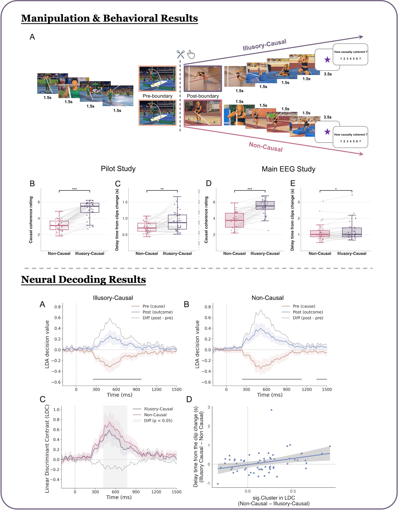
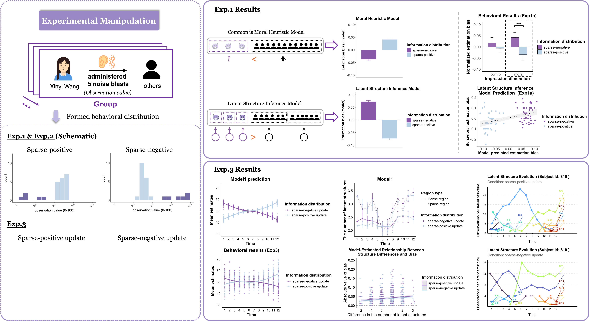

Research
Both projects share a common intuition: the cognitive processes we rely on most to make sense of the world—such as structural inference and causal processing—are efficient and powerful. But that very efficiency inevitably leaves traces. These aren't signs of failure; they show us exactly how the mind work. My work seeks to uncover where those traces appear, and what they reveal.
Illusory-Causal Impression Attenuates the Detection of Event Boundaries
The human brain segments the continuous flow of experience into distinct events. Yet, in cinema, the art of continuity editing bridges the transitions between separate shots to build a coherent, immersive experience for us viewers. How the brain bridges these gaps remains poorly understood. We hypothesized that causal impression — even when illusory — acts as a powerful heuristic to attenuate the neural representation of event boundaries, thereby facilitating a smoother transition across events. To test this, we presented participants with action-outcome sequences spliced from different clips to create an illusory causal link across the cut (e.g., a man bending a pole, followed by a woman propelled upward in a different setting). These were compared against matched non-causal controls. Behaviorally, the illusory-causal impression delayed boundary detection. Neurally, it reduced the N2 amplitude at the event transition and increased cross-boundary neural similarity, as if the brain were treating two separate events as one continuous episode. Critically, the greater and more stable the cross-boundary neural separability in posterior brain regions, the faster participants detected the event change. These findings provide a neuroscientific basis for intuitive editing techniques used in filmmaking, demonstrating the brain's Gestalt-like drive to integrate discrete experiences into a coherent whole.

Li, J., Chen, F., & Hu, Y. (2026). Illusory-Causal Impression Attenuates the Detection of Event Boundaries. The Journal of Neuroscience, 46(23), e1889252026.
A Bayesian Structure Inference Account of Biases in the Formation and Updating of Group Moral Impressions
When we observe a group in moral scenarios, we rarely see uniform behavior: most members act in ordinary ways, while a few are rare and deviant. What determines which ones drive the overall impression? Two accounts make opposite predictions. The "Common Is Moral" (CIM) heuristic suggests that frequent behaviors dominate, producing a density bias toward the majority. But if the mind instead infers latent structure by grouping similar behaviors into shared categories, then rare, diverse behaviors carry more weight — because these outliers resist assimilation into existing structures and force the inference of new ones, yielding a sparsity bias. Across behavioral experiments with computational modeling (N > 300), we found evidence for the structural inference account: group moral impressions were skewed toward sparse behaviors, and a latent structure inference model based on the Chinese Restaurant Process (CRP) fit participants' data better than the CIM model. A spatial arrangement task provided direct representational evidence: participants relied more on inferred latent structures than salient visual labels (e.g., gender) to organize group members. Finally, extending the framework to group impression updating via a Recurrent CRP (RCRP), we suggested that formation and updating may be two manifestations of the same Bayesian nonparametric inference process operating in static versus changing environments.



Li, J., Chen, F., & Hu, Y. (2026). A Bayesian Structure Inference Account of Biases in the Formation and Updating of Group Moral Impressions. PsyArXiv. https://doi.org/10.31234/osf.io/bypke_v1